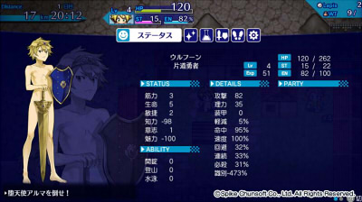
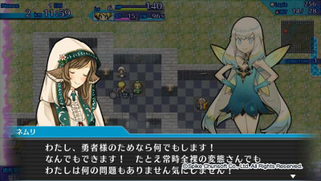

■
2015-08-29 (土) 片道+69 終わらぬ戦い▼
とうとうSteamリリースも完了し、片道勇者タグで書き込みすることは
しばらくないかと思いましたが全然そんなことはなく、
今も片道勇者プラスのバグ修正を続行中です。
『不思議のクロニクル 振リ返リマセン勝ツマデハ』（フリカツ）より 片道勇者C
もちろん、プラネットハウルの開発も順調に進めています。
片方の締め切りに間に合わせながら
片方のサポート対応する必要もあるというハードな状況ですが、
いつものことながら体や心を壊さない程度に進めていきたいですね。
執筆時点では、プラネットハウルはあと19日でリリースです！
片道勇者プラスの英語版サポートについては、
私が英語分からないのもありますが、ひとまずは
明らかに間違ってる部分の修正を進めている最中です。
特に「数字」が違ってる部分に関しては修正必須で、
もし英語版を遊んでおられる方で、そういうのにお気付きになった方は
ご一報いただけると助かります。
今のところ英語版のみのミスで、贖罪の教会で
価格が間違っていた（15000が5000になってた）とか、
日英両方の特徴解放画面で必殺の達人の「必殺率+10％」の説明文が
正しくは7％だったとか、そういったものが見つかっています。
以下は気になった拍手コメント返信です。
皆さまの励ましのコメント、いつもありがとうございます！
＞どうしても気になるので質問させていただくのですが、
＞パルシアのヘアバンドについてる飾りのようなものは
＞羽飾りでしょうか？よければ回答お願いします。 .
ディテールが粗すぎて私にもよく分かりませんが、
おそらく羽根飾りのつもりだったと思います。
＞密かに片道勇者開発記を待っているんですが、もしかして
＞今のプロジェクトがひと段落しない限りはなさ気……？ .
心苦しいのですが、今のプロジェクトは片道のサポートと合わせると
リソースを本当に100％投入してそれでも締め切りギリギリな状況なので、
プロジェクトが終わるまでは開発記は出せないと思います。
プラネットハウルが終わったら、たっぷり落書きを詰め込んで、
片道勇者まわりの話を満足するまで書きたいと思ってます。■
2015-08-08 (土) フリカツ15 片道勇者DLC▼
「不思議のクロニクル 振リ返リマセン勝ツマデハ（以下フリカツ）」が
発売されて一週間となりました。
気になる売れ行きは、パッケージ版は
アスキー・メディアワークスさん調べで
Vita版5171本、PS4版が1907本という感じでしたが、
ダウンロード版のほうはPS StoreでPS4版現在4位、
Vita版が現在1位ととても好調みたいです。
ローグライク系はふとしたときに遊びたいことが多いので、
DL版のほうが人気なのかもしれませんね。
新規IPのゲームを売るのが難しい世の中になってきてる印象ですが、
原案者としては多少なりとも貢献できたほうがそりゃ嬉しいので
この調子でちょっとずつでも売れ続けるといいなと思っています。
【片道勇者DLCが大変なことに】
で、「前回ネムリが大変なことに！」とか言ってましたが、
8/6にリリースされた片道勇者DLCはもっと大変なことになってました！
クラス「片道勇者」はほぼ原作の雰囲気そのままなんですが、
ゼヌーラまわりが忠実に再現されてしまったおかげで
予想以上にエラいことになってます。

ゼヌーラ状態にまさかの 全身立ち絵 が！
恐るべきことにタイプB・Cの女子勇者にもゼヌーラ後の全身立ち絵が
ありましたが危なすぎて載せられません。なおCはケモ耳尻尾でした。

ゼヌーラ状態で仲間に話すと一言二言ほど専用の反応が！（※ボイス付き）
※ただし主人公の魅力が絶望的にマイナスなので仲間にはなってくれません
ゼヌーラすると、町NPCは当然としてボスである堕天使アルマさんにすら
全裸の変態扱いされるのが実にアツいですね。反応がいちいち細かい！
スパイク・チュンソフトさん変な方向にがんばりすぎですよ！！
ありがとうございます！ ありがとうございます！
なお、片道勇者解放クエスト自体は原作のキャラが登場して、
原作既プレイの方にはちょっと懐かしい気分になれるものとなっています。
クリアまで最低1250kmと長いので、長距離が苦手な方は
夢幻倉庫から出すものを出して挑んでいただくことを推奨します。
【インターフェース改良も！】
片道勇者DLCと同日、Ver1.03のアップデートで
フリカツにメニュー周りの改善も来ました。
メニューの展開が早くなったのと、タブ切り換えが一瞬になったのと、
足元交換時にアイテムが直接使えるようになったのが来たので、
だいぶ遊びやすくなりました。
体験版にも反映されてるはずですので、
メニューが遅くてやめちゃった方は、
もう一度ご覧になってみてもいいかもしれませんね。
プロデューサさんのツイッターによると、
今後もより快適なプレイを行えるようにするために
機能改善を調整しておられるとのことで、
8/20の無料DLCと合わせて楽しみにしています。
【おまけ】
※マジックワンド：集中が常に+1される杖、原作の「祈りの杖」相当
※でもフリカツではフォースによる武器消費量が激しいので、
実は言うほどこの杖は多用できません。いい調整だと思います。 カテゴリ: 片道勇者
カテゴリ: 片道勇者 カテゴリ: 片道勇者
カテゴリ: 片道勇者